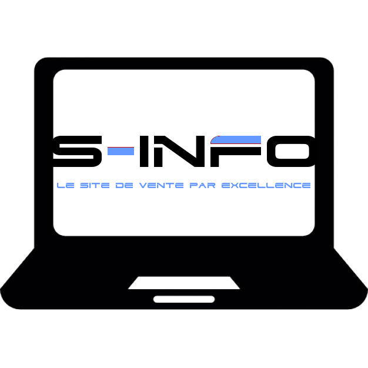

Fondée en 2006 au Saguenay, par Samuel Larouche et Francois-Olivier Duguay, S-Info à commencer par être un magasin de vente de matériels informatiques dans un petit établissement à Jonquière.
Aujourd'hui, S-Info à sa propre clientèle, possède un plus grand entrepôt et a même une boutique de vente en ligne.